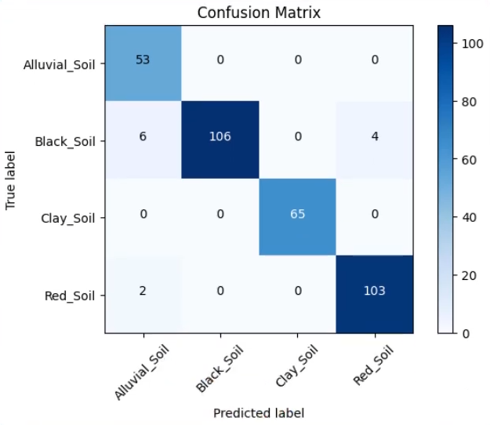

ACCURACY
99%
Overall Classification Rate
Deep Learning Model Evaluation Metrics
Overall Classification Rate
Prediction Correctness
True Positive Rate
Harmonic Mean
| METRIC | VALUE | DESCRIPTION |
|---|---|---|
| Accuracy | 0.99 | Percentage of correctly classified soil images |
| Precision | 0.99 | Ratio of true positive to total positive predictions |
| Recall | 0.99 | Ratio of true positive to actual positive samples |
| F-Measure | 0.99 | Weighted average of precision and recall |
Visual representation of classification accuracy across all soil types
